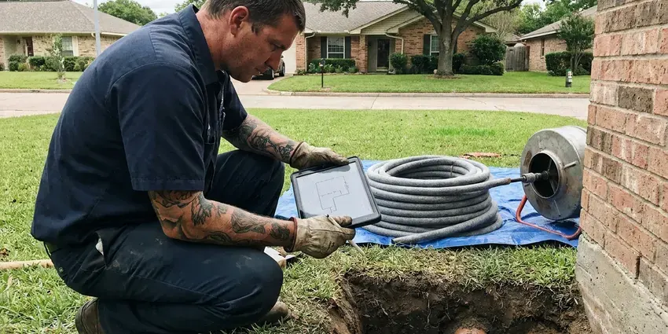

Plumbing Repair in Hutchinson, KS
When you have a plumbing problem in Hutchinson, KS, you need a quick and effective solution. KRV Plumbing provides full-service plumbing repair services to keep your home running smoothly.
- Licensed Plumbers
- Licensed Kansas Plumbers
- Workmanship Warranty Included
- Accurate Diagnostics

Need Quick Plumbing Repair in Hutchinson, KS?
Call now and a licensed plumber can often be at your door the same day.
Professional Plumbing Repair Services Across Hutchinson, KS
KRV Plumbing provides comprehensive plumbing repair services across Hutchinson, KS. Our experienced technicians are equipped with modern tools to diagnose and fix everything from a simple faucet drip to complex sewer line issues, ensuring your home's plumbing system works the way it should.
Our expertise includes:
- Advanced sewer and drain line repair, including trenchless methods.
- Skilled repair for all types of leaks: gas, water, slab, foundation.
- Electronic and acoustic leak detection for slab and wall leaks

Additional Plumbing Repair Services in Hutchinson, KS
We offer expert plumbing repair services across Hutchinson, KS to stop leaks, clear blockages, and keep every fixture working the way it should.


Customers
Why Choose KRV Plumbing for Plumbing Repair in Hutchinson, KS?
Choosing the right plumber in Hutchinson means selecting a team that understands local building codes and Kansas plumbing challenges. KRV Plumbing brings years of experience to every job, ensuring your repairs are done right the first time.
- Stocked Trucks, We carry common valves, cartridges, water heater parts and pipe so most repairs wrap up on the first visit.
- Certified Plumbers, Our team holds all required licenses and certifications, ensuring professional and compliant service.
- Guaranteed Work, We stand behind our plumbing repairs with warranties on parts and labor so you can rest easy.
Citywide Coverage
KRV Plumbing covers every neighborhood and surrounding area of Hutchinson, ensuring that no matter where you are, expert plumbing repair is just a call away. Our local presence means quicker response times when you need us most for a plumbing emergency.
Experienced Team
Our plumbing repair technicians are not just skilled; they are problem-solvers with broad experience across all plumbing systems in Kansas homes. They undergo rigorous training and hold all necessary licenses, equipped to handle everything from a minor drip to a major pipe burst with precision.
Safety-First Approach
Safety is paramount in all our plumbing repair work, especially when dealing with gas lines, water pressure, or structural elements. Our technicians carefully follow all local Hutchinson and Kansas plumbing codes, using proper tools and techniques to protect your home and family.
Trusted Certified Hutchinson Plumbing Services Professionals
At KRV Plumbing, we take pride in providing certified plumbing services throughout Hutchinson, KS. Backed by recognized industry credentials, our experienced plumbers combine technical skill with genuine customer care. Whether it is repair, installation, or maintenance, we follow strict safety and quality standards to deliver lasting results you can trust.
Call Us Now PHCC Plumbing Contractor Recognition
PHCC Plumbing Contractor Recognition Better Business Bureau (BBB) Accreditation
Better Business Bureau (BBB) Accreditation Angi Certified Pro
Angi Certified Pro ISO 9001 Quality Management Certification
ISO 9001 Quality Management CertificationLocal Plumbing Repair Services in Hutchinson, KS
Well Pump Repair in Hutchinson, KS
For rural homes or properties relying on well water in Hutchinson, a malfunctioning well pump can mean no water at all. We focus on diagnosing and repairing issues with submersible and jet pumps, including motor failures, pressure switch problems, or electrical faults. We understand the critical role your well pump plays in your water supply and work quickly to restore its function, ensuring reliable water pressure throughout your Kansas property.

Water Softener Repair in Hutchinson, KS
Water across much of Kansas runs quite hard, leaving mineral scale in water heaters, faucets, showerheads, and dishwashers. Hard water leads to scale buildup in pipes and appliances, which is why many homes in Hutchinson, KS rely on water softeners. If your softener isn't working correctly, you might notice white residue, dry skin, or spots on dishes. KRV Plumbing repairs all major brands and types of water softeners, addressing issues like resin bed problems, timer malfunctions, or brine tank issues, returning your system to optimal performance.
Slab Leak Repair in Hutchinson, KS
Slab leaks are a serious concern for plenty of homes, especially where soil shifts under the foundation. These hidden leaks under your concrete foundation can cause serious damage, leading to foundation cracks, increased water bills, and mold growth. Our team uses advanced acoustic and thermal imaging technology to pinpoint the exact location of the leak without unnecessary demolition. We offer several repair methods including direct access, rerouting, or trenchless solutions to minimize disruption to your Hutchinson home.
Trenchless Pipe Repair in Hutchinson, KS
Trenchless methods let us fix damaged sewer and water lines without tearing up driveways, pavers or mature landscaping. Pipe bursting pulls a new HDPE line through the old path, while cured-in-place lining creates a new pipe inside the existing one. These options often cost about the same as a deep excavation once restoration is counted. We confirm the line is a good candidate with a camera before recommending it.
Gas Leak Repair in Hutchinson
Gas leaks are extremely dangerous and require immediate professional attention. If you smell gas, hear a hissing sound near gas appliances or lines, or experience symptoms like dizziness, evacuate and call us immediately. Our certified technicians in Hutchinson use dedicated detectors to locate the leak in your natural gas or propane lines, then perform safe and code-compliant repairs or replacements. We prioritize your safety above all else.
Sewer Line Repair in Hutchinson, KS
Sewer line problems, like persistent clogs, foul odors, or lush spots in your yard, indicate serious issues. Tree root intrusion is a frequent problem in Hutchinson, causing cracks and blockages. We offer both traditional trenching and modern trenchless sewer line repair options. Trenchless methods, such as pipe bursting or pipe lining, allow us to repair or replace your sewer line with minimal excavation, protecting your landscaping and property in Hutchinson.
Water Leak Repair in Hutchinson
Leaks hide inside walls, under cabinets and in yard lines between the meter and the house. We track them with moisture meters, thermal cameras and pressure tests, then open only as much drywall or soil as needed. Repairs include replacing pinholed copper sections, failed PEX crimp fittings, leaking hose bibs and worn shutoff valves. Catching a hidden leak early protects drywall, cabinets and flooring from mold.

Water Heater Repair in Hutchinson
When your water heater acts up, whether it's a gas or electric model, you notice it immediately. We diagnose issues like no hot water, inconsistent temperatures, strange noises, or leaks from the tank. Water across much of Kansas runs hard, leaving mineral scale in water heaters, faucets, showerheads, and dishwashers. Sediment buildup is a common culprit in Hutchinson homes, reducing efficiency. We repair elements, thermostats, pilot lights, and pressure relief valves, extending the life of your unit and restoring your hot water supply.
Plumbing Repairs Near Me in Hutchinson, KS
Local experience matters with plumbing because homes in Kansas share common weak points like mineral scale, pressure regulators that fail and slab lines that shift with the soil. Our plumbers see these problems daily and carry the parts to fix them. That means fewer return trips and a repair that lasts.
When you search for plumbing repair near me in Hutchinson, you want a local company that understands your needs and can respond fast. KRV Plumbing is positioned to serve all neighborhoods, making sure that a qualified plumber is never far away when you need help.
KRV Plumbing at a Glance
- Licensed and insured plumbers serving Hutchinson, KS
- Same-day appointments and 24/7 emergency response
- Clear written estimates, no hidden fees
- 4.9-star rated by 910+ Kansas customers
Hutchinson Map
Hutchinson Information
- Population
- 39,662
- Area codes
- Local
- Service area
- Hutchinson and communities within 40 miles
- Nearby
- Wichita, Derby, Salina, Junction City
Water across much of Kansas runs hard, leaving mineral scale in water heaters, faucets, showerheads, and dishwashers. Homes in Hutchinson, KS can see scale buildup, pinhole leaks and slab line failures over time, so timely plumbing repair prevents costly water damage.
Expert Services
Trust our professionals for reliable KRV Plumbing solutions in Hutchinson, KS.
Our Specialized Plumbing Services in Hutchinson, KS
At KRV Plumbing, we provide a complete range of plumbing services across Hutchinson, KS. From leak detection to full system installations, our team ensures fast, precise, and affordable service for both residential and commercial properties. Explore our core services below:


How Our Plumbing Repair Service Works in Hutchinson, KS
Getting a plumbing problem fixed should be simple, so we keep the process brief and clear.
Request a Quote
Contact us by calling (316) 229-8459 or filling out our online form to schedule your plumbing repair service. We will gather initial information about your issue.
Expert Diagnosis
A certified KRV Plumbing plumber will arrive at your Hutchinson home to carefully inspect the problem. We use modern tools to accurately diagnose the root cause.
Clear Solutions
We provide a detailed explanation of the issue and a transparent, upfront quote for the necessary repairs. You will understand all your options before work begins.
Frequently Asked Questions About Plumbing Repair in Hutchinson
The cost of plumbing repair in Hutchinson varies widely depending on the type and complexity of the issue. A minor repair like a leaky faucet might range from $150 to $350, while a major repair such as a slab leak or sewer line replacement could be several thousand dollars. We provide a detailed, upfront estimate after diagnosing the problem.
We repair fixtures and equipment from Moen, Delta, Kohler, American Standard, Rheem, A.O. Smith, Bradford White, Navien and Rinnai, along with most other major brands. We stock popular parts for each.
Swapping a faucet aerator, flapper or showerhead is a fair DIY job. Gas lines, water heaters, slab leaks and sewer lines carry safety and code requirements, so those are best left to a licensed plumber.
Yes. Most calls received in the morning are handled the same day, and we run emergency service day and night for active leaks, sewer backups and no-water situations.
Look out for warning signs such as dripping faucets, constantly slow drains, gurgling noises from drains or toilets, unexplained wet spots on walls or floors, sudden increases in your water bill, or a drop in water pressure. Any lingering strange odors from drains can also indicate a problem.
KRV Plumbing offers 24/7 emergency plumbing repair services in Hutchinson. Our goal is to dispatch a plumber as quickly as possible, often within a few hours for urgent situations, to limit damage and restore your plumbing system.
Regular plumbing maintenance can greatly reduce the need for repairs. This includes avoiding pouring grease down drains, using drain strainers, flushing your water heater annually to remove sediment, checking for leaks regularly, and scheduling professional plumbing inspections. Hard freezes happen every winter in Kansas, and pipes in exterior walls, garages, and crawlspaces are the most at risk. Insulating exposed pipes before winter helps prevent freezing.
Yes, KRV Plumbing stands behind the quality of our plumbing repair work. We offer a warranty on both parts and labor for all repairs performed. The exact warranty period may vary depending on the type of repair and components used. We will provide full details on your warranty before any work begins.
What People Are Saying About Our Plumbing Experts?

Patricia H.
We had a slab leak that two other companies could not find. KRV Plumbing located it in under an hour, explained our options, and the price matched the quote to the dollar.
Slab Leak Repair · Emporia, KS
Laura S.
I scheduled a water heater replacement, and the team made the process smooth and affordable. The new unit works perfectly, and they cleaned up after completing the job.
Water Heater Replacement · Salina, KS
Daniel K.
A pipe burst at 11 pm and they actually answered. The plumber showed up within the hour, shut everything down, and had us back to normal the next morning. Could not ask for more.
Emergency Plumbing · Wichita, KS
Emily R.
I called KRV Plumbing for plumbing repair, and the technician was fast, polite, and thorough. They explained the problem clearly and fixed it the same day. I will definitely hire them again. Highly recommended!
Plumbing Repair · Junction City, KSSofia M.
Two new toilets installed in one visit, no mess left behind, and the tech even adjusted a faucet he noticed was dripping. Fair pricing and really friendly.
Toilet Installation · Emporia, KS
James P.
Our commercial plumbing system had a leak under the sink, and KRV Plumbing handled it professionally. The plumbers arrived quickly and restored everything without disruption to our customers.
Commercial Plumbing · Derby, KS